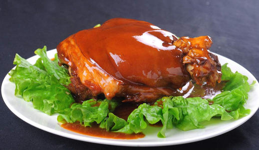
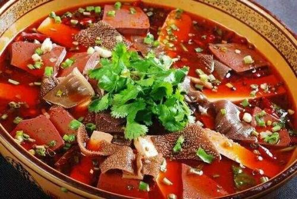

东坡肘子

宫保鸡丁
宫保鸡丁选用鸡肉为主料，佐以花生米、黄瓜、辣椒等辅料烹制而成。 红而不辣、辣而不猛、香辣味浓、肉质滑脆。由于其入口鲜辣，鸡肉的鲜嫩配合花生的香脆。
2018年9月，被评为“中国菜”之贵州十大经典名菜、四川十大经典名菜。

毛血旺

毛血旺以鸭血为制作主料，烹饪技巧以煮菜为主，口味属于麻辣味。起源于重庆，流行于重庆和西南地区，是一道著名的传统菜式。这道菜是将生血旺现烫现吃，且毛肚杂碎为主料，遂得名。
毛血旺是重庆市的特色菜，也是渝菜江湖菜的鼻祖之一，已经列入国家标准委员会《渝菜烹饪标准体系》。